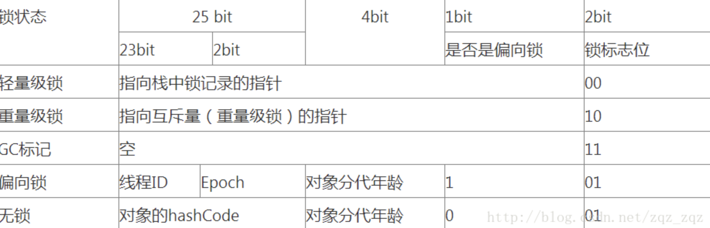
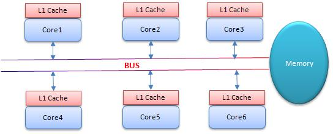

<!DOCTYPE html>
<html>
<head><meta name="generator" content="Hexo 3.8.0">
  <meta charset="utf-8">
  

  
  <title>JVM Synchronizer | Imoko</title>
  <meta name="viewport" content="width=device-width, initial-scale=1, maximum-scale=1">
  <meta name="description" content="#JVM synchronizer     SafePoint避免程序长时间运行而不进入safepoint markwordmarkword是java对象数据结构中的一部分。 markword数据的长度在32位和64位的虚拟机（未开启压缩指针）中分别为32bit和64bit，它的最后2bit是锁状态标志位，用来标记当前对象的状态  CAS的问题CAS为什么会引入本地延迟？这要从SMP（对称多处理器">
<meta property="og:type" content="article">
<meta property="og:title" content="JVM Synchronizer">
<meta property="og:url" content="http://yoursite.com/2018/11/22/Java_synchronizer/index.html">
<meta property="og:site_name" content="Imoko">
<meta property="og:description" content="#JVM synchronizer     SafePoint避免程序长时间运行而不进入safepoint markwordmarkword是java对象数据结构中的一部分。 markword数据的长度在32位和64位的虚拟机（未开启压缩指针）中分别为32bit和64bit，它的最后2bit是锁状态标志位，用来标记当前对象的状态  CAS的问题CAS为什么会引入本地延迟？这要从SMP（对称多处理器">
<meta property="og:locale" content="default">
<meta property="og:image" content="http://yoursite.com/2018/11/22/Java_synchronizer/image-20180905033426190.png">
<meta property="og:image" content="http://yoursite.com/2018/11/22/Java_synchronizer/411087_1311836022idIz.png">
<meta property="og:updated_time" content="2018-11-22T06:24:29.000Z">
<meta name="twitter:card" content="summary">
<meta name="twitter:title" content="JVM Synchronizer">
<meta name="twitter:description" content="#JVM synchronizer     SafePoint避免程序长时间运行而不进入safepoint markwordmarkword是java对象数据结构中的一部分。 markword数据的长度在32位和64位的虚拟机（未开启压缩指针）中分别为32bit和64bit，它的最后2bit是锁状态标志位，用来标记当前对象的状态  CAS的问题CAS为什么会引入本地延迟？这要从SMP（对称多处理器">
<meta name="twitter:image" content="http://yoursite.com/2018/11/22/Java_synchronizer/image-20180905033426190.png">
  
    <link rel="alternate" href="/atom.xml" title="Imoko" type="application/atom+xml">
  
  
    <link rel="icon" href="/favicon.png">
  
  
    <link href="//fonts.googleapis.com/css?family=Source+Code+Pro" rel="stylesheet" type="text/css">
  
  <link rel="stylesheet" href="/css/style.css">
</head>
</html>
<body>
  <div id="container">
    <div id="wrap">
      <header id="header">
  <div id="banner"></div>
  <div id="header-outer" class="outer">
    <div id="header-title" class="inner">
      <h1 id="logo-wrap">
        <a href="/" id="logo">Imoko</a>
      </h1>
      
    </div>
    <div id="header-inner" class="inner">
      <nav id="main-nav">
        <a id="main-nav-toggle" class="nav-icon"></a>
        
          <a class="main-nav-link" href="/">Home</a>
        
          <a class="main-nav-link" href="/archives">Archives</a>
        
      </nav>
      <nav id="sub-nav">
        
          <a id="nav-rss-link" class="nav-icon" href="/atom.xml" title="RSS Feed"></a>
        
        <a id="nav-search-btn" class="nav-icon" title="Search"></a>
      </nav>
      <div id="search-form-wrap">
        <form action="//google.com/search" method="get" accept-charset="UTF-8" class="search-form"><input type="search" name="q" class="search-form-input" placeholder="Search"><button type="submit" class="search-form-submit">&#xF002;</button><input type="hidden" name="sitesearch" value="http://yoursite.com"></form>
      </div>
    </div>
  </div>
</header>
      <div class="outer">
        <section id="main"><article id="post-Java_synchronizer" class="article article-type-post" itemscope="" itemprop="blogPost">
  <div class="article-meta">
    <a href="/2018/11/22/Java_synchronizer/" class="article-date">
  <time datetime="2018-11-22T06:24:29.000Z" itemprop="datePublished">2018-11-22</time>
</a>
    
  </div>
  <div class="article-inner">
    
    
      <header class="article-header">
        
  
    <h1 class="article-title" itemprop="name">
      JVM Synchronizer
    </h1>
  

      </header>
    
    <div class="article-entry" itemprop="articleBody">
      
        <p>#JVM synchronizer    </p>
<h4 id="SafePoint"><a href="#SafePoint" class="headerlink" title="SafePoint"></a>SafePoint</h4><p>避免程序长时间运行而不进入safepoint</p>
<h4 id="markword"><a href="#markword" class="headerlink" title="markword"></a>markword</h4><p>markword是java对象数据结构中的一部分。</p>
<p>markword数据的长度在32位和64位的虚拟机（未开启压缩指针）中分别为32bit和64bit，它的<strong>最后2bit是锁状态标志位</strong>，用来标记当前对象的状态</p>
<p></p>
<h4 id="CAS的问题"><a href="#CAS的问题" class="headerlink" title="CAS的问题"></a>CAS的问题</h4><p>CAS为什么会引入本地延迟？这要从SMP（对称多处理器）架构说起。下图大概表明了SMP的结构：</p>
<p></p>
<p>其意思是所有的CPU会共享一条系统总线（BUS），靠此总线连接主存。每个核都有自己的一级缓存，各核相对于BUS对称分布，因此这种结构称为“对称多处理器”。</p>
<p>CAS的全称为Compare-And-Swap，是一条CPU的原子指令。Core1和Core2可能会同时把主存中某个位置的值Load到自己的L1 Cache中，当Core1在自己的L1 Cache中修改这个位置的值时，会通过总线，使Core2中L1 Cache对应的值“失效”，而Core2一旦发现自己L1 Cache中的值失效（称为Cache命中缺失）则会通过总线从内存中加载该地址最新的值，大家通过总线的来回通信称为“Cache一致性流量”，因为总线被设计为固定的“通信能力”，如果Cache一致性流量过大，总线将成为瓶颈。</p>
<p>全局安全点</p>
<h3 id="偏向锁-Biased-Locking"><a href="#偏向锁-Biased-Locking" class="headerlink" title="偏向锁(Biased Locking)"></a>偏向锁(Biased Locking)</h3><p>偏向锁就是为了消除CAS，消除无竞争情况下的同步原语，即轻量锁的CAS。</p>
<p>它会偏向于第一个访问锁的线程，如果在运行过程中，同步锁只有一个线程访问，不存在多线程争用的情况，则线程是不需要触发同步的，减少加锁／解锁的一些CAS操作（比如等待队列的一些CAS操作），这种情况下，就会给线程加一个偏向锁。 如果在运行过程中，遇到了其他线程抢占锁，则持有偏向锁的线程会被挂起，JVM会消除它身上的偏向锁，将锁恢复到标准的轻量级锁。</p>
<p>就是说如果同一时间只有一个线程来获取锁的话，是满足偏向锁的条件的</p>
<p>问题1 ：偏向锁什么时候升级为轻量锁，怎么升级</p>

      
    </div>
    <footer class="article-footer">
      <a data-url="http://yoursite.com/2018/11/22/Java_synchronizer/" data-id="cjos8tzgu000crkwk38msri1f" class="article-share-link">Share</a>
      
      
    </footer>
  </div>
  
    
<nav id="article-nav">
  
  
    <a href="/2018/11/22/DBs_mysql_locks/" id="article-nav-older" class="article-nav-link-wrap">
      <strong class="article-nav-caption">Older</strong>
      <div class="article-nav-title">Mysql Locks</div>
    </a>
  
</nav>

  
</article>

</section>
        
          <aside id="sidebar">
  
    

  
    

  
    
  
    
  <div class="widget-wrap">
    <h3 class="widget-title">Archives</h3>
    <div class="widget">
      <ul class="archive-list"><li class="archive-list-item"><a class="archive-list-link" href="/archives/2018/11/">November 2018</a></li><li class="archive-list-item"><a class="archive-list-link" href="/archives/2018/10/">October 2018</a></li><li class="archive-list-item"><a class="archive-list-link" href="/archives/2018/08/">August 2018</a></li><li class="archive-list-item"><a class="archive-list-link" href="/archives/2018/07/">July 2018</a></li><li class="archive-list-item"><a class="archive-list-link" href="/archives/2018/05/">May 2018</a></li><li class="archive-list-item"><a class="archive-list-link" href="/archives/2018/04/">April 2018</a></li></ul>
    </div>
  </div>


  
    
  <div class="widget-wrap">
    <h3 class="widget-title">Recent Posts</h3>
    <div class="widget">
      <ul>
        
          <li>
            <a href="/2018/11/22/Java_synchronizer/">JVM Synchronizer</a>
          </li>
        
          <li>
            <a href="/2018/11/22/DBs_mysql_locks/">Mysql Locks</a>
          </li>
        
          <li>
            <a href="/2018/11/22/BTreeStruct/">B-tree数据结构</a>
          </li>
        
          <li>
            <a href="/2018/11/22/hystrix/">Hystrix简介</a>
          </li>
        
          <li>
            <a href="/2018/11/22/consul-simple/">Consul简介</a>
          </li>
        
      </ul>
    </div>
  </div>

  
</aside>
        
      </div>
      <footer id="footer">
  
  <div class="outer">
    <div id="footer-info" class="inner">
      &copy; 2018 Tao<br>
      Powered by <a href="http://hexo.io/" target="_blank">Hexo</a>
    </div>
  </div>
</footer>
    </div>
    <nav id="mobile-nav">
  
    <a href="/" class="mobile-nav-link">Home</a>
  
    <a href="/archives" class="mobile-nav-link">Archives</a>
  
</nav>
    

<script src="//ajax.googleapis.com/ajax/libs/jquery/2.0.3/jquery.min.js"></script>


  <link rel="stylesheet" href="/fancybox/jquery.fancybox.css">
  <script src="/fancybox/jquery.fancybox.pack.js"></script>


<script src="/js/script.js"></script>


  </div>
</body>
</html>